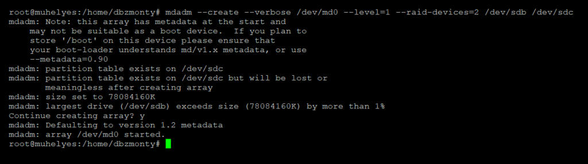
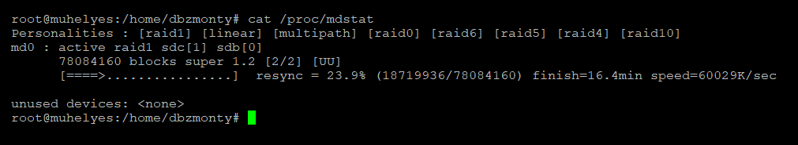
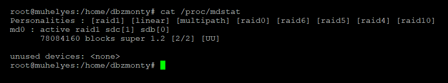
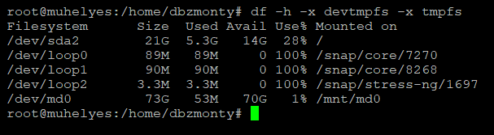
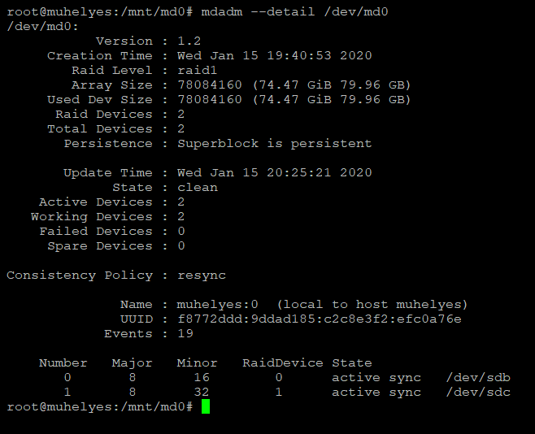

I am using 2 pieces of 80GB hard drives, with a slightly different capacities. First of all let’s switch to superuser to prevent lots of sudos and list the devices and partitions.
sudo su
lsblk
We are going to use sdb and sdc. Let’s make sure that disks don’t have any partitions, if there is one at least (sdb1) delete it with fdisk using ‘d’ command:
fdisk /dev/sdb
Install mdadm:
apt install mdadm
Create the RAID 1 array with sdb and sdc:
mdadm –create –verbose /dev/md0 –level=1 –raid-devices=2 /dev/sdb /dev/sdc
The array is created and syncing is started, check the syncing state:
cat /proc/mdstat
When the sync finishes, you can see the following state:
cat /proc/mdstat
Now the array is ready, let’s make the file system for md0 and mount it to /mnt/md0
mkfs.ext4 -F /dev/md0
mkdir -p /mnt/md0
mount /dev/md0 /mnt/md0
The array’s file system is ready and mounted, to see if it works and check the available free space, type the following command:
df -h -x devtmpfs -x tmpfs
Save the array layout and set it auto-reassembled after reboots:
mdadm –detail –scan | sudo tee -a /etc/mdadm/mdadm.conf
update-initramfs -u
echo '/dev/md0 /mnt/md0 ext4 defaults,nofail,discard 0 0' | sudo tee -a /etc/fstab
mdadm –detail /dev/md0
sdb and sdc is active, to replace sdb, we need to set it to faulty and remove it from the array, then shut down the system.
mdadm /dev/md0 –fail /dev/sdb
mdadm /dev/md0 –remove /dev/sdb
mdadm –detail /dev/md0
shutdown now
After replacing the disk physically, make sure there is no partition on it, if it has, delete with fdisk as I mentioned above. If you’re not sure about the device name, you can use the lsblk command. Let’s add the new disk to the array:
mdadm /dev/md0 –add /dev/sdb
Rebuild is started, it may take a long time, to check the process use one of the following commands:
cat /proc/mdstat
mdadm –detail /dev/md0
First of all we need to unmount it, stop it, remove superblocks from disks.
umount /mnt/md0
mdadm –stop /dev/md0
mdadm –zero-superblock /dev/sdb
mdadm –zero-superblock /dev/sdc
Then, comment or delete the following lines:
nano /etc/fstab
# /dev/md0 /mnt/md0 ext4 defaults,nofail,discard 0 0
nano /etc/mdadm/mdadm.conf
# ARRAY /dev/md0 …
Finally, updete initramfs:
update-initramfs -u